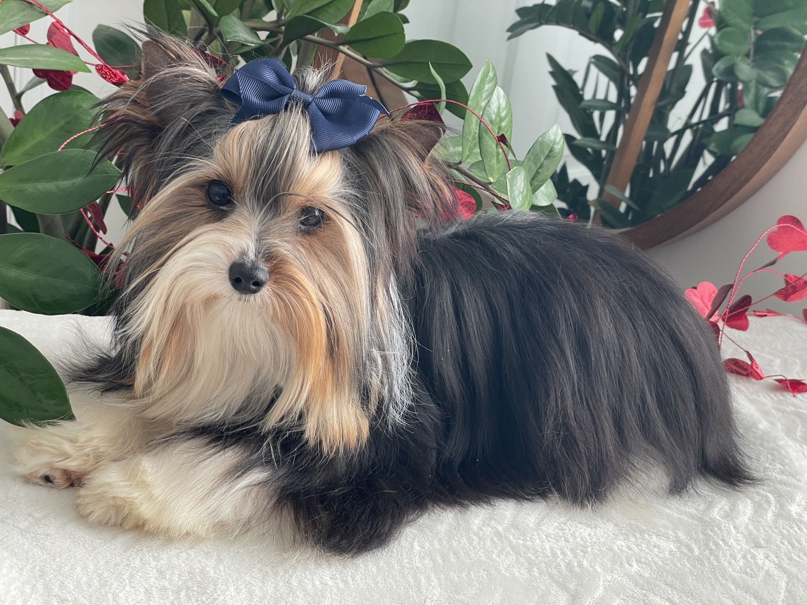

Raised with love, purpose, and intention, for more than twenty years.

What began in 2005 as a love for this beautiful breed has grown into a lifelong passion, and a commitment to the qualities we treasure most.
Over the years, my husband and I have worked diligently to raise puppies who are not only beautiful, with gorgeous heavy coats and the shorter, cobby structure we love, but most importantly, who are healthy, well-balanced, confident, and wonderfully socialized. For us, breeding has never been simply about producing puppies. It is about raising them with love, purpose, and intention.
Eight years ago, another family joined us in this journey, and our shared love for the breed has made it even more special. Together we raise every puppy in a warm, loving, family-centered home, surrounded by people, handled with care, and given the individual attention they need to thrive.
Every puppy we raise carries with them a little piece of our hearts, and it is our hope they bring your family the same love, joy, and companionship this incredible breed has brought into ours.
A photograph of Judith and the family with the dogs will live here.
A warm, natural photo of your family does more to build trust than anything else on the page. Share one and we will feature it prominently.
From the moment they are born, our puppies are part of the family.
Puppies are raised underfoot, surrounded by the sounds and rhythms of a loving family home.
Each puppy is held and handled with care every day, building confidence and trust in people.
Gentle, age-appropriate experiences help every puppy grow into a well-balanced companion.
We give each little one the individual attention they need to thrive and feel secure.
We would love to show this with real photos and short clips of the puppies' first weeks, send them over and we will build this into a living section families can revisit.
Words from the families who have welcomed a Contented Puppy.
Three family testimonials will be featured here.
Ideally with a photo of each family and their puppy. Send us a few and we will style them beautifully across the site.
We would love to help your family find the perfect companion.
Start an Inquiry